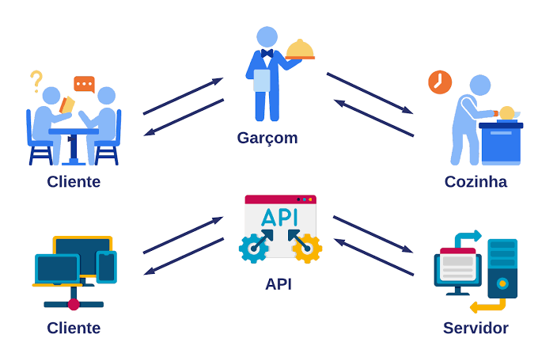

Atividade 3
Visão Geral sobre APIs

Introdução
APIs e integrações de sistemas formam hoje a base técnica dominante para interoperabilidade entre aplicações, especialmente em arquiteturas distribuídas, em nuvem e orientadas a microsserviços. A literatura converge em quatro pontos: APIs expõem dados e funções de forma padronizada; integrações conectam sistemas, processos e dados; o estilo arquitetural mais adequado depende do caso de uso; e os maiores desafios atuais estão em segurança, governança, versionamento e observabilidade.
Conceitos
Conceitualmente, uma API é a interface pela qual um sistema disponibiliza operações e dados a outro sistema, enquanto integração de sistemas é o arranjo arquitetural e operacional que faz sistemas heterogêneos trocarem informações com confiabilidade e propósito de negócio.
A relação entre ambos é direta: APIs são um dos mecanismos mais importantes de integração, mas não o único; filas, barramentos, webhooks, ETL/ELT e middleware continuam relevantes, sobretudo quando há requisitos de desacoplamento temporal, integração legada ou processamento assíncrono.
APIs comunicam sistemas por contratos explícitos. Um cliente envia uma requisição a um endpoint, com método, cabeçalhos, parâmetros e payload; o servidor processa a operação e devolve uma resposta com status, dados e, em muitos casos, metadados de erro ou autenticação. Em arquiteturas síncronas, isso normalmente ocorre em padrão request-response sobre HTTP; em arquiteturas assíncronas, APIs convivem com eventos, filas e notificações disparadas por webhooks ou brokers de mensagens.
APIs modernas também dependem de conceitos auxiliares que aparecem recorrentemente na literatura aplicada: autenticação e autorização para controlar acesso; JSON e XML como formatos de intercâmbio; documentação contratual com OpenAPI/Swagger; versionamento para evitar breaking changes; e gateways para centralizar segurança, roteamento, limitação de tráfego e observabilidade.
Arquiteturas de API
REST
REST continua sendo o estilo mais difundido para APIs públicas e empresariais por sua simplicidade, ampla interoperabilidade e alinhamento com operações CRUD sobre HTTP. REST é especialmente adequado quando portabilidade, familiaridade das equipes, cache e integração com ecossistemas web são prioritários, embora sofra com over-fetching, under-fetching e, em ambientes de grande escala, complexidade de versionamento.
SOAP
SOAP ocupa hoje um papel mais restrito, porém ainda relevante em contextos que exigem forte padronização contratual, interoperabilidade formal e, em alguns cenários, requisitos corporativos mais rígidos de segurança e confiabilidade. A literatura comparativa também mostra que SOAP tende a impor maior overhead que REST em tempo de resposta e uso de memória, o que ajuda a explicar sua perda de espaço em soluções web modernas.
GraphQL
GraphQL é descrito de forma consistente como linguagem de consulta cliente-dirigida, de endpoint único, que reduz tráfego desnecessário ao permitir seleção precisa de campos. Essa flexibilidade o torna particularmente útil em front ends complexos, aplicações móveis e experience APIs, mas a evidência também aponta maior complexidade de implementação, custo de parsing e resolução, dificuldades de cache e, em vários benchmarks, maior latência que REST ou gRPC.
gRPC
gRPC aparece com forte vantagem para comunicação interna entre microsserviços e cenários de baixa latência, graças ao uso de HTTP/2, serialização binária e suporte a streaming. Em benchmarks experimentais, gRPC frequentemente apresenta melhor latência e eficiência que REST e GraphQL, embora imponha maior complexidade operacional, depuração menos simples e integração mais difícil com navegadores.
WebSocket
WebSocket é a principal opção para comunicação bidirecional persistente em tempo real. A literatura mais antiga e mais recente converge em que WebSocket reduz overhead e latência em comparação com pooling HTTP, sendo mais adequado para chat, jogos, monitoramento, streaming e interfaces reativas. A adoção, porém, não substituiu totalmente alternativas baseadas em HTTP, e evidências de medição na web aberta mostram que polling ainda é mais comum e que práticas de segurança em WebSocket frequentemente são negligenciadas.
Síncronas
APIs síncronas são mais simples para operações que exigem resposta imediata e consistência perceptível ao usuário, enquanto APIs e integrações assíncronas favorecem desacoplamento, resiliência e propagação de eventos entre múltiplos consumidores. A literatura recente tende a defender arquiteturas híbridas: APIs síncronas para consulta e interação externa, e eventos, filas ou streams para processos internos distribuídos
Modelos de Integração
A trajetória histórica da literatura vai de middleware e SOA/ESB para modelos API-first, microservices e arquiteturas orientadas a eventos. Integração ponto a ponto ainda existe, mas é amplamente tratada como difícil de escalar e manter, porque o número de dependências cresce com o portfólio de aplicações.
ESB
O ESB surgiu como resposta para integração corporativa em larga escala, oferecendo backbone distribuído, mediação, roteamento e serviços de integração sobre sistemas heterogêneos. A literatura mais recente, porém, enfatiza que ESBs centralizados podem introduzir complexidade, gargalos e menor agilidade, o que impulsionou arquiteturas mais leves baseadas em APIs, gateways e microsserviços.
Orientada a APIs
Integração orientada a APIs organiza a conectividade por contratos reutilizáveis e, em sua formulação mais madura, por camadas como System APIs, Process APIs e Experience APIs. Esse modelo tende a melhorar reuso, modularidade, governança e velocidade de entrega, com benefícios reportados em confiabilidade, custo e tempo de integração em setores como finanças e saúde.
Orientada a Eventos
Integrações orientadas a eventos, filas e mensageria aparecem como a resposta principal para desacoplamento temporal e alta resiliência em ambientes distribuídos. Publicadores emitem eventos sem conhecer consumidores; brokers garantem armazenamento, entrega e, em alguns casos, replay e ordenação, o que torna essas abordagens adequadas para fluxos de negócio, pipelines de pedidos, pagamentos, telemetria e integração entre múltiplos domínios.
Webhooks
Os Webhooks são melhor entendidos como notificações orientadas a eventos sobre HTTP, úteis quando um sistema precisa avisar outro sobre mudança de estado sem polling contínuo. Eles são leves e simples, mas não substituem brokers quando há forte necessidade de durabilidade, reprocessamento, ordenação ou múltiplos assinantes independentes.
ETL/ELT
As integrações via ETL/ELT continuam pertinentes quando o objetivo central é consolidação analítica, qualidade de dados e transformação em pipelines, e não interação transacional online. A literatura recente nessa área enfatiza testes multicamadas, validação contínua e automação para lidar com fontes heterogêneas e esquemas mutáveis.
Ferramentas, Segurança e Práticas
Gateways
API gateways são a tecnologia transversal mais recorrente na literatura recente. Eles centralizam autenticação, roteamento, transformação, limitação de taxa, cache, observabilidade e políticas de segurança, tornando-se ponto de controle crítico em arquiteturas distribuídas. Ao mesmo tempo, a literatura alerta que gateways mal dimensionados ou excessivamente centralizados podem se tornar gargalos de desempenho e governança, o que motiva arquiteturas com múltiplos gateways, gateway-mesh ou integração com service mesh.
Segurança
Em segurança, há consenso moderado sobre um núcleo de boas práticas: OAuth 2.0 e JWT para autorização e propagação de identidade; HTTPS/TLS para confidencialidade em trânsito; rate limiting e throttling para abuso e DDoS; validação de entrada, logging e auditoria; e gateways como policy enforcement points. Os riscos mais citados incluem acesso não autorizado, abuso de token, configuração insegura, vazamento de contratos ou metadados, falhas de autenticação e baixa proteção de canais em tempo real.
Literatura aplicada
A literatura aplicada também enfatiza governança do ciclo de vida: documentação padronizada, versionamento, testes automatizados, monitoramento e contract management. Em estudos com equipes de microsserviços, mudanças de API exigem comunicação intensa, e desenho REST ruim aumenta breaking changes e degrada compatibilidade retroativa.
Testes
Testes de API se consolidaram como área própria. Há forte crescimento de pesquisa em testes automatizados de REST APIs, com ferramentas baseadas em OpenAPI, geração automática de casos, fuzzing, testes orientados a restrições e, mais recentemente, LLMs para criação de cenários e dados de teste. Em paralelo, pipelines ELT/ETL vêm adotando validação shift-left e testes semânticos automatizados para manter qualidade em integrações analíticas complexas
Aplicações e Tendências Futuras
Aplicações
Os casos de uso empresariais mais consistentes na literatura incluem integração CRM-ERP, plataformas financeiras, saúde, e-commerce, IoT e nuvem híbrida.
Finanças
Em finanças, APIs impulsionam open banking, agregadores e orquestração entre sistemas sensíveis a compliance e tempo real.
Saúde
Em saúde, REST, FHIR, gateways e OAuth 2.0 aparecem como base preferencial para interoperabilidade com proteção regulatória e controle granular de acesso.
Iot e Pagamentos
Em IoT e pagamentos, a integração tende a exigir baixa latência, segurança reforçada e coordenação entre dispositivos, apps, gateways de pagamento e serviços em nuvem.
E-commerce e Aplicativos Móveis
Em e-commerce e aplicativos móveis, a literatura favorece modelos híbridos: REST ou GraphQL para experiência do cliente, eventos e mensageria para pedidos, estoque, logística e fidelização.
Tendências Futuras do Mercado
O estado atual da área aponta cinco tendências principais:
A primeira é a consolidação de arquiteturas cloud-native com microservices, gateways e
service mesh.
A segunda é a migração de middleware centralizado para API-first e integração por
contratos.
A terceira é a expansão de integração orientada a eventos, com brokers e automação
serverless, sobretudo para processos internos e cargas variáveis.
A quarta é a crescente automação da governança, do teste e da observabilidade de APIs.
A quinta é a incorporação de IA à orquestração e à segurança, embora aqui a evidência
ainda seja mais emergente que consolidada.
Conclusão
Em síntese, APIs são interfaces contratuais para expor capacidades de software, e integrações de sistemas são os arranjos arquiteturais que conectam aplicações, dados e processos. A literatura atual favorece REST para interoperabilidade ampla, GraphQL para consumo flexível de dados, gRPC para comunicação interna de alta performance, WebSocket para tempo real e integração orientada a eventos para resiliência e desacoplamento. O deslocamento mais importante é a passagem de integrações centralizadas e ponto a ponto para arquiteturas API-first, cloud-native e event-driven. A maior questão em aberto é como escalar segurança, governança e observabilidade sem reintroduzir a complexidade centralizadora que essas novas arquiteturas procuraram eliminar.
Referências
SETH, Dhruv Kumar; Ratra, Karan Kumar; Lakshminarayanachar, Rangarajan; Athamakuri, Swamy Sai Krishna Kireeti; Sundareswaran, Aneeshkumar. Pattern Play: Advanced API Integration for Cutting-Edge Applications. International Journal for Research in Applied Science and Engineering Technology, v. 12, n. 7, p. 1529-1540, jul. 2024. Disponível em: https://consensus.app/papers/pattern-play-advanced-api-integration-for-cuttingedge-seth-ratra/4e252f37265b5ceea062a344055535fd/
Acesso em: 14 ago. 2026
MIРОNOV, [nome não identificado]. Research of API Architecture for Client-Server. [S. l.]: [s. n.], [s. d.]. Disponível em: https://consensus.app/papers/research-%D0%BEf-api-architecture-for-client%C2%ADserver-mironov/890eef5928b8572b82e52cb344ced9cc/
Acesso em: 14 ago. 2026
HAMMED, Nafiu Ikeoluwa; OSHOBA, Theophilus Onyekachukwu; AHMED, Kabir Sholagberu. API Management and Governance Model for Large-Scale SaaS Solutions. International Journal of Advanced Multidisciplinary Research and Studies, v. 3, n. 1, p. 1501-1509, fev. 2023. Disponível em: https://consensus.app/papers/api-management-and-governance-model-for-largescale-saas-hammed-oshoba/adea5243ac365310880a9886be80ce6f/
Acesso em: 14 ago. 2026
MEHBOOB, Sheik Asif. Architectural Evolution in Enterprise Integration: The Paradigm Shifts from Middleware to API-First Approaches. World Journal of Advanced Engineering Technology and Sciences, v. 15, n. 1, p. 143-152, 2025. Disponível em: https://consensus.app/papers/architectural-evolution-in-enterprise-integration-the-mehboob/319bea0bf33753fa98c1d8825b21669c/
Acesso em: 14 ago. 2026
XIE, Na. Strategic Approaches to API Design and Management. Applied and Computational Engineering, v. 64, p. 229-235, jun. 2024. Disponível em: https://consensus.app/papers/strategic-approaches-to-api-design-and-management-xie/91dfefd452be5c46ae02de2a54010d68/
Acesso em: 14 ago. 2026
KATTA, Tejaswi Bharadwaj. Demystifying Integration Patterns and Their Application in Different Fields. Global Journal of Engineering and Technology Advances, v. 23, n. 1, p. 243-249, abr. 2025. Disponível em: https://consensus.app/papers/demystifying-integration-patterns-and-their-application-katta/4043243158a25044842774c1e45b7cf7/
Acesso em: 14 ago. 2026
MEHBOOB, Sheik Asif. Orchestrating the Distributed Enterprise: Microservices as Catalysts for Systems Integration Evolution. International Journal of Small Business and Entrepreneurship Research, v. 13, n. 1, p. 73-88, abr. 2025. Disponível em: https://consensus.app/papers/orchestrating-the-distributed-enterprise-microservices-mehboob/455452938c81568e940977ab907ab933/
Acesso em: 14 ago. 2026
NAGARE, Pravin. Optimizing API Gateway Architectures for Scalable Enterprise Integration. International Journal of Scientific Research in Science, Engineering and Technology, 2025. Disponível em: https://consensus.app/papers/optimizing-api-gateway-architectures-for-scalable-nagare/3bf9984a54e658f7985d0e16ea58a334/
Acesso em: 14 ago. 2026
MYLSAMY, Sekar; SHRIVASTAV, Aman. API Design and Integration in a Microservices Environment. International Journal for Research Publication and Seminar, v. 16, n. 1, p. 409-419, jan./mar. 2025. Disponível em: https://consensus.app/papers/api-design-and-integration-in-a-microservices-environment-mylsamy-shrivastav/6348bfb3e95854cb8f58241964c281ed/
Acesso em: 14 ago. 2026
DEPA, Venugopal Reddy. Event-Driven vs. API-Driven: A Strategic Architectural Paradigm Choice. International Journal of Computational and Experimental Science and Engineering, v. 11, n. 4, p. 9400-9407, dez. 2025. Disponível em: https://consensus.app/papers/eventdriven-vs-apidriven-a-strategic-architectural-depa/f2d8540692b15cf386abb659aa3784ea/
Acesso em: 14 ago. 2026
HASSAN, Mohamed. Choosing the Right Communication Protocol for Your Web Application. arXiv, 2024. Disponível em: https://consensus.app/papers/choosing-the-right-communication-protocol-for-your-web-hassan/27d6e2af77f6597fb3f3c7c6c7a9f1c2/
Acesso em: 14 ago. 2026
GARGOURI, Reza. A Multilayer Testing Framework for Automated Data Quality. [S. l.]: [s. n.], [s. d.]. Disponível em: https://consensus.app/papers/a-multilayer-testing-framework-for-automated-data-quality-gargouri-reza/d8e958cfb3e8542eb0e488bdc5ad6d9c/
Acesso em: 14 ago. 2026
RAMIDI, [nome não identificado]. Cloud-Based API Gateways for Seamless Multiplatform [Integration]. [S. l.]: [s. n.], [s. d.]. Disponível em: https://consensus.app/papers/cloudbased-api-gateways-for-seamless-multiplatform-ramidi/01e1b78133f7596981f10a4cc09a89d2/
Acesso em: 14 ago. 2026
ZHAO, Chenchen. API Common Security Threats and Security Protection Strategies. Frontiers in Computing and Intelligent Systems, [S. l.], [s. d.]. Disponível em: https://consensus.app/papers/api-common-security-threats-and-security-protection-zhao/c4051c227e2452bcbdbbf4e2dadaf198/
Acesso em: 14 ago. 2026
CHANDRA, Steven; FARISI, Ahmad. Comparative Analysis of RESTful, GraphQL, and gRPC APIs: Perfomance Insight from Load and Stress Testing. Jurnal Sisfokom (Sistem Informasi e Komputer), v. 14, n. 1, p. 81-85, jan. 2025. Disponível em: https://consensus.app/papers/comparative-analysis-of-restful-graphql-and-grpc-apis-chandra-farisi/410ef398176854a0afd91f28c56ecc4a/
Acesso em: 14 ago. 2026
ADELEKE, Adams Gbolahan; SANYAOLU, Temitope Oluwafunmike; EFUNNIYI, Christianah Pelumi; AKWAWA, Lucy Anthony; AZUBUKO, Chidimma Francisca. API Integration in FinTech: Challenges and Best Practices. Finance & Accounting Research Journal, v. 6, n. 8, p. 1531-1554, ago. 2024. Disponível em: https://consensus.app/papers/api-integration-in-fintech-challenges-and-best-practices-adeleke-sanyaolu/d91adf80044752b7986d005652d52869/
Acesso em: 14 ago. 2026
PUTTA, Nagarjuna; DAVE, Arth; BALASUBRAMANIAM, Vanitha Sivasankaran; PRASAD, MSR; KUMAR, Sandeep; VASHISHTHA, Sangeet. Optimizing Enterprise API Development for Scalable Cloud Environments. Journal of Quantum Science and Technology, v. 1, n. 3, p. 229-246, ago. 2024. Disponível em: https://consensus.app/papers/optimizing-enterprise-api-development-for-scalable-cloud-putta-dave/15da1ece029757d5b0dfb53a7ef4cef9/
Acesso em: 14 ago. 2026
LERCHER, Alexander; GLOCK, Johann; MACHO, Christian; PINZGER, Martin. Microservice API Evolution in Practice: A Study on Strategies and Challenges. Journal of Systems and Software, v. 215, art. 112110, set. 2024. Disponível em: https://consensus.app/papers/microservice-api-evolution-in-practice-a-study-on-lercher-glock/fbeed9bae32a5fbf9a95fb17a8ad244f/
Acesso em: 14 ago. 2026
LETTIERE, [nome não identificado]; ALVAREZ, [nome não identificado]. Enterprise Service Bus. [S. l.]: [s. n.], [s. d.]. Disponível em: https://consensus.app/papers/enterprise-service-bus-lettiere-alvarez/c805737e7fe05f8c9ea1b547b092b133/
Acesso em: 14 ago. 2026
PAPAZOGLOU, Mike P.; VAN DEN HEUVEL, Willem-Jan. Service-Oriented Architectures: Approaches, Technologies and Research Issues. The VLDB Journal, v. 16, n. 3, p. 389-415, jul. 2007. Disponível em:
https://consensus.app/papers/service-oriented-architectures-approaches-technologies-papazoglou-heuvel/e5bf501dd4585ddd84a4bd91fb53a034/
Acesso em: 14 ago. 2026